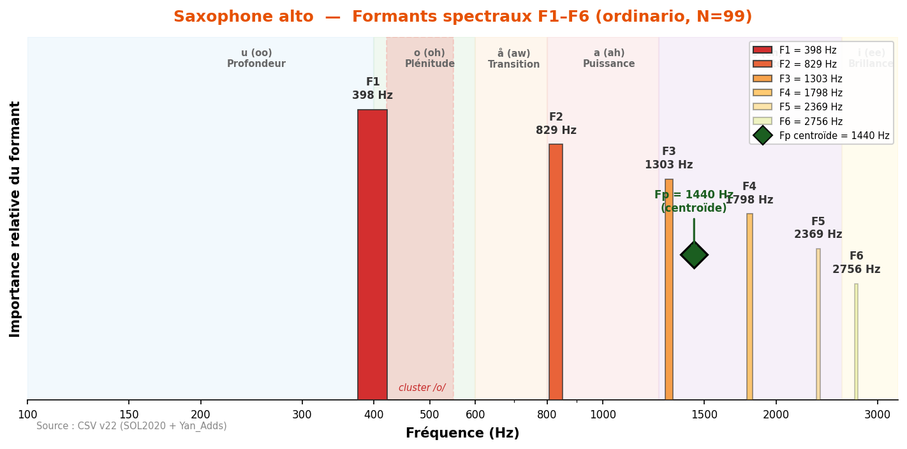

Plage formantique : 398–1 798 Hz (voyelles /o/ → /e/).
Caractéristique : tuyau conique + anche simple = spectre riche en harmoniques pairs et impairs. Le saxophone alto partage la « coloration vocalique en /o/ » (Giesler) avec le basson, le cor et le trombone.
Note : les Saxophone ténor et Saxophone baryton ne sont pas encore disponibles dans la base de données specenv.

Son chaud et expressif, grande flexibilité dynamique. F1=398 Hz dans la zone /o/ (plénitude). Le tuyau conique du saxophone produit un spectre riche en harmoniques pairs et impairs. Fp centroïde à 1440 Hz. Giesler note la « o-ähnlicher Vokalfärbung » (coloration vocalique en /o/) partagée avec le basson, le cor et le trombone.
Fp centroïde = 1440 Hz
| Technique | N | F1 | F2 | F3 | F4 | F5 | F6 |
|---|---|---|---|---|---|---|---|
| aeolian | 26 | 904 | 1 314 | 1 669 | 1 938 | 2 250 | 2 746 |
| backwards | 31 | 538 | 1 249 | 1 755 | 2 326 | 2 735 | 3 047 |
| bisbigliando | 29 | 431 | 797 | 1 249 | 1 572 | 2 175 | 2 476 |
| blow_without_reed | 1 | 980 | 1 410 | 1 852 | 2 369 | 2 692 | 3 015 |
| chromatic_scale | 2 | 474 | 797 | 1 227 | 1 529 | 2 358 | 2 670 |
| crescendo | 31 | 377 | 851 | 1 324 | 1 733 | 2 003 | 2 562 |
| crescendo_to_decrescendo | 31 | 377 | 743 | 1 174 | 1 550 | 2 121 | 2 595 |
| decrescendo | 31 | 344 | 894 | 1 314 | 1 852 | 2 218 | 2 735 |
| discolored_fingering | 12 | 183 | 474 | 969 | 1 227 | 2 013 | 2 078 |
| double_tonguing | 33 | 355 | 711 | 1 174 | 1 647 | 2 293 | 2 584 |
| exploding_slap_pitched | 3 | 560 | 1 195 | 1 475 | 1 787 | 2 089 | 2 347 |
| flatterzunge | 33 | 398 | 829 | 1 217 | 1 884 | 2 390 | 3 133 |
| flatterzunge_to_ordinario | 33 | 366 | 668 | 1 098 | 1 389 | 2 078 | 2 724 |
| glissando | 30 | 355 | 711 | 1 087 | 1 712 | 2 046 | 2 530 |
| harmonic_fingering | 9 | 484 | 1 270 | 2 013 | 2 282 | 2 638 | 3 208 |
| harmonics_glissando | 1 | 388 | 743 | 1 873 | 2 143 | 2 692 | 3 370 |
| key_click | 12 | 258 | 560 | 915 | 1 292 | 1 680 | 2 282 |
| kiss | 1 | 560 | 1 077 | 1 400 | 1 669 | 2 013 | 2 272 |
| move_bell_from_down_to_up | 6 | 560 | 1 120 | 1 669 | 2 218 | 2 778 | 3 338 |
| move_bell_from_left_to_right | 6 | 549 | 1 120 | 1 669 | 2 218 | 2 767 | 3 327 |
| multiphonics | 47 | 409 | 754 | 1 324 | 1 820 | 2 153 | 2 509 |
| ordinario | 99 | 398 | 829 | 1 303 | 1 798 | 2 369 | 2 756 |
| ordinario_high_register | 42 | 1 389 | 2 358 | 3 510 | 3 758 | 4 167 | 5 006 |
| ordinario_quartertones | 87 | 409 | 851 | 1 324 | 1 970 | 2 422 | 2 821 |
| ordinario_to_flatterzunge | 31 | 355 | 775 | 1 260 | 1 733 | 2 100 | 2 466 |
| play_and_sing_glissando | 2 | 237 | 506 | 1 927 | — | — | — |
| play_and_sing_min_second_up | 3 | 215 | 538 | 894 | 1 249 | 1 820 | 2 067 |
| play_and_sing_unison | 11 | 194 | 463 | 926 | 1 238 | 2 013 | 2 326 |
| sforzato | 31 | 388 | 1 152 | 1 647 | 2 078 | 2 498 | 2 961 |
| slap_pitched | 46 | 334 | 861 | 1 249 | 1 690 | 2 261 | 2 799 |
| slap_unpitched | 3 | 291 | 581 | 926 | 1 238 | 1 744 | 2 089 |
| staccato | 31 | 624 | 1 281 | 1 680 | 2 056 | 2 358 | 2 928 |
| trill_major_second_up | 33 | 377 | 743 | 1 260 | 1 852 | 2 336 | 2 810 |
| trill_minor_second_up | 32 | 474 | 958 | 1 335 | 1 916 | 2 390 | 2 756 |
Source : CSV v22 — pipeline validé Δ=0 Hz.